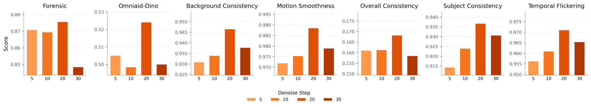

Implicit preferences
Construct online preference pairs from the model’s own denoising process—without human annotations or learned reward models.
Implicit Preference Optimization for Text-to-Video Generation
1Tsinghua University 2Kling Team, Kuaishou Technology 3Sun Yat-sen University
Video failures are often sparse in time. A few unstable frames can break the realism of an otherwise compelling generation.
Recent preference alignment methods improve visual quality, yet temporally sparse artifacts—motion collapse, object flickering, and color oversaturation—remain difficult to correct. Existing approaches face a preference attribution bottleneck and temporal credit misallocation: offline labels are expensive, online rewards can be biased, and uniform supervision misses brief failure segments.
We introduce concentrated Implicit Preference Optimization (cIPO), a post-training framework that derives preference signals directly from reconstruction rollouts. The original real video acts as the preferred sample, while its noised-then-denoised reconstruction becomes the dispreferred sample. Frame-level reconstruction errors then reveal when failures occur, allowing optimization to concentrate on high-error temporal regions.
Construct online preference pairs from the model’s own denoising process—without human annotations or learned reward models.
Use frame-wise latent reconstruction error to locate hard frames and focus learning on failure-prone segments.
Preserve already-correct content with clean first-frame anchoring and a penalty that prevents preferred-sample degeneration.
Preference attribution and temporal credit assignment are intertwined: useful alignment signals must reflect the model’s current rollout errors and identify the exact frames where those errors emerge.


cIPO turns the denoising trajectory into its own supervision. Reconstruction reveals model-specific errors; temporal concentration assigns credit where those errors actually happen.

Encode a real video, add noise at a selected diffusion step, then denoise with the current policy. The clean latent is preferred; the reconstruction is dispreferred.
Measure frame-wise latent MSE. High-error frames expose temporally localized artifacts such as flickering, collapse, and abrupt discontinuity.
Apply pairwise preference learning on the selected hard segments while a likelihood-preserving penalty stabilizes the preferred sample.
Across MotionBench and WISA, cIPO improves both frame authenticity and VBench temporal quality over the pretrained model, offline/online DPO, and DenseDPO.

The complete comparison video collects additional prompts and failure modes, contrasting pretrained, DPO, DenseDPO, and cIPO outputs.

Too little noise produces easy negatives; too much disrupts semantic consistency. Moderate rollout perturbation exposes failure modes while preserving meaningful structure, producing the strongest authenticity–motion trade-off.

If you find cIPO useful in your research, please cite the paper.
@misc{liu2026cipo,
title = {Temporal Concentration from Rollout Errors:
Implicit Preference Optimization for Text-to-Video Generation},
author = {Liu, Henglin and Kong, Fangyuan and Wang, Jing and Lin, Yizhou
and Huang, Nisha and Liu, Chang and Wang, Xintao and Wan, Pengfei
and Gai, Kun and Li, Xiu},
year = {2026}
}